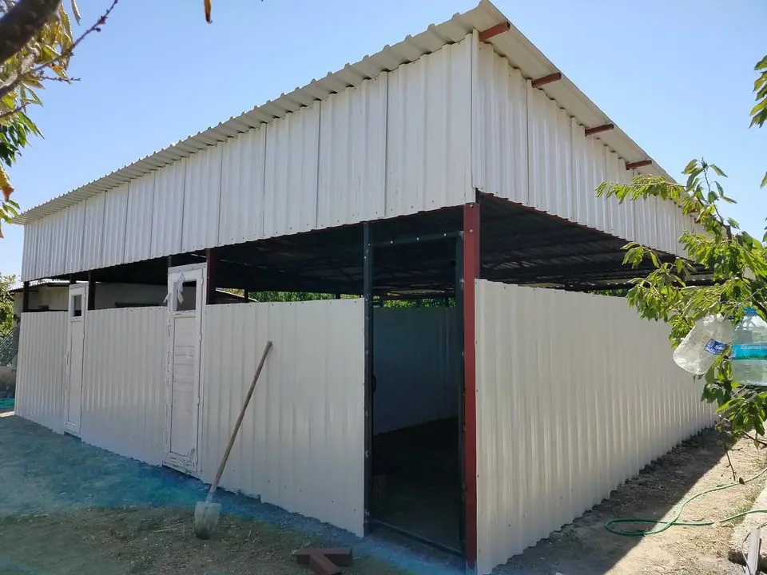
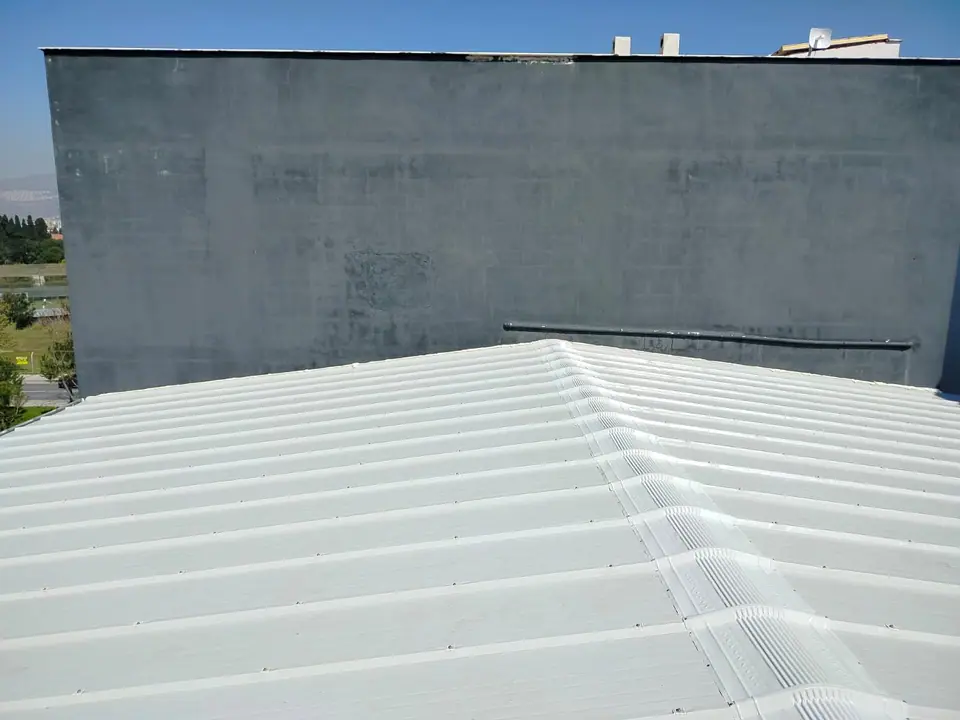

Aliağa'da sac çatı
Aliağa, İzmir'in kuzeyinde rafineri, petrokimya ve demir-çelik tesisleri ile limanlarıyla öne çıkan bir sanayi ilçesidir. Sanayinin yanında ilçe merkezinde hızla büyüyen konut alanları, kıyı şeridi ve çevre köylerdeki tarım-hayvancılık faaliyetleri bir arada bulunur.
Tarım depoları ve ürün ambarlarında trapez sac çatı, ekonomik ve hızlı bir çözümdür; ürünlerin sıcaktan etkilenmemesi gereken depolarda sandviç panel tercih edilebilir.
Adresimiz Aliağa Yeni Mahalle'de olduğu için ilçe merkezi ve çevre köylerdeki keşif taleplerini planlamak bizim için en kolay olanıdır.

Sunulan uygulamalar
- Trapez sac çatı kaplama
- Sandviç panel (yalıtımlı) çatı kaplama
- Şeffaf aydınlatma paneli uygulaması
- Mahya, dere, oluk ve baca detayları
- Eski çatı kaplamasının sökülerek yenilenmesi
Aliağa için uygulama senaryoları
Ahır ve ağıllarda sac çatı, havalandırma mahyası ve şeffaf aydınlatma panelleriyle birlikte planlandığında hayvanlar için daha aydınlık ve havadar bir ortam sağlar.
Atölye ve depolarda sızdıran eski çatıların sandviç panelle yenilenmesi, hem su sorununu çözer hem de iç ortam sıcaklığını dengeler.
Kıyıya yakın yapılarda kaplama malzemesinin boya ve galvaniz kalitesi ile vida-conta seçimi, tuzlu havanın etkisine karşı belirleyicidir.
Bahçe depoları, kömürlükler ve müstakil ev ek yapılarında sac çatı, kısa sürede tamamlanabilen pratik bir çözümdür.
Keşif talepleri Yeni Mahalle, Kültür, Şakran, Helvacı dahil Aliağa genelinden alınır.
Kullanılan malzeme ve üretim süreci
- Boyalı galvaniz trapez sac
- Poliüretan veya taşyünü dolgulu sandviç panel
- Contalı çatı vidaları ve mahya elemanları
- Polikarbonat aydınlatma panelleri
Aliağa koşulları: Kuzey rüzgârlarına açık kıyı kesimi ile sanayi bölgesine yakın alanlarda metal yüzeylerin korozyona karşı iyi korunması önemlidir.
Uygulama alanları
- Depo ve ambarlar
- Ahır, ağıl ve kümesler
- Atölye ve iş yerleri
- Sundurma ve otoparklar
- Konut ve bahçe yapıları
İlgili çalışmalar



Görseller farklı lokasyonlardaki çalışmalarımızdan örneklerdir.
Neden sac çatı?
- Hızlı uygulama
- Hafif kaplama ile taşıyıcıya düşük yük
- Sandviç panelde ısı yalıtımı
- Az bakım gerektirmesi
Keşif ve fiyatlandırma nasıl ilerler?
İletişim
WhatsApp veya telefonla işinizi kısaca anlatın; varsa fotoğraf ve yaklaşık ölçüleri paylaşın.
Keşif ve ölçü
Gerekli işlerde yerinde keşif yapılır, kesin ölçüler alınır ve saha koşulları incelenir.
Projeye özel teklif
Malzeme, yüzey koruma ve montaj kapsamı netleştirilerek teklif hazırlanır.
İmalat
Onay sonrası parçalar ölçüye göre kesilir, kaynaklanır, temizlenir ve boyanır.
Montaj ve teslim
Sahada montaj yapılır, son kontroller tamamlanarak iş teslim edilir.
Sık sorulan sorular
Aliağa'da sac çatı için keşfe geliyor musunuz?
Evet, Aliağa dahil İzmir'in tüm ilçelerinden keşif talebi alıyoruz. Adresimiz Aliağa Yeni Mahalle'de olduğu için ilçe merkezi ve çevre köylerdeki keşif taleplerini planlamak bizim için en kolay olanıdır. Keşiften önce iş yerinin fotoğraflarını ve yaklaşık ölçülerini WhatsApp'tan göndermeniz ön değerlendirmeyi hızlandırır.
Aliağa koşullarında sac çatı için nelere dikkat edilmeli?
Kuzey rüzgârlarına açık kıyı kesimi ile sanayi bölgesine yakın alanlarda metal yüzeylerin korozyona karşı iyi korunması önemlidir. Malzeme, profil ve yüzey koruma seçenekleri keşifte bu koşullara göre önerilir.
Aliağa'da sac çatı fiyatı nasıl belirlenir?
Fiyat; işin ölçüsü, kullanılacak malzeme ve profil kalınlığı, yüzey koruma tipi ve montaj koşullarına göre belirlenir. Aliağa için ulaşım ve saha koşulları da keşifte değerlendirilir; sabit liste fiyatı yerine projeye özel teklif verilir.
Sac çatı yağmurda ses yapar mı?
Tek kat trapez sac yağmurda ses yapabilir. Ses ve ısı konforunun önemli olduğu yapılarda sandviç panel veya sac altına yalıtım uygulaması önerilir.
Trapez sac mı sandviç panel mi seçmeliyim?
Isıtılan veya yaşam alanı olarak kullanılan yerlerde sandviç panel; depo, sundurma ve otopark gibi yalıtım gerektirmeyen yerlerde trapez sac genellikle yeterlidir.